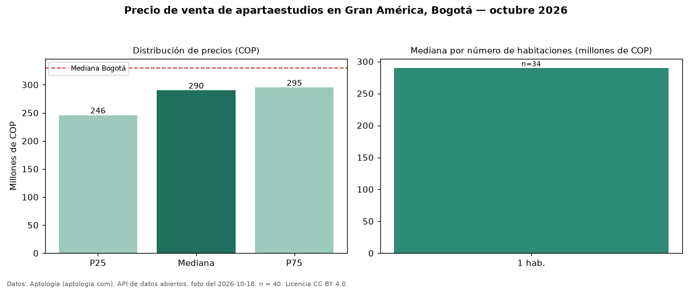

Precio de venta de apartaestudios en Gran América, Bogotá — octubre 2026
En Gran América (localidad de Teusaquillo), Bogotá, la mediana de precio de venta de apartaestudios es COP 290 millones, según 40 avisos vigentes. Frente al total de Bogotá (COP 330 millones), el barrio está 12 % por debajo. Con la mediana de arriendo del mismo barrio (COP 1.750.000 al mes), el arriendo anual equivale a 7,2 % del precio de venta: una aproximación gruesa a la rentabilidad bruta, porque compara medianas de ofertas distintas. El segmento con más oferta es el de 1 habitación (34 avisos, mediana COP 290 millones). 5 % de los avisos incluye parqueadero. Por mediana, es el puesto 20 de 28 barrios de Bogotá con al menos 30 avisos de apartaestudios en venta: en la franja media. El aviso más barato pide COP 170 millones y el más caro COP 650 millones. Datos: Aptología (aptologia.com), API de datos abiertos, licencia CC BY 4.0 — https://www.aptologia.com/apartaestudios-en-venta/bogota/gran-america. Archivos: PDF de 2 páginas, CSV con las cifras y gráfica PNG.

| Avisos únicos | 40 |
|---|---|
| Percentil 25 | COP 245.700.000 |
| Mediana | COP 290.000.000 |
| Percentil 75 | COP 295.000.000 |
Fuente: avisos vigentes de portales inmobiliarios recopilados por Aptología, deduplicados (mínimo 30 avisos únicos por celda). Precios pedidos, no cerrados. Fecha: 2026-10-18.